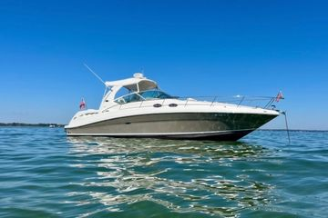

B-Atlas Boat Guide · SEAR-340-SU
Sea Ray 340 Sundancer Multi-Generation Express Cruiser
1984–2008
The Sea Ray 340 Sundancer (multi-generation) is a production express cruiser designed around cockpit social space, planing performance and overnight accommodation below. Twin-engine propulsion is typical, with model generations varying in drive type, dimensions and interior arrangement.

- Length
- 34 ft
- Beam
- 11.42 ft
- Draft
- 2.92 ft
- Hull behaviour
- Planing
- Fuel
- Gasoline
- Propulsion
- Shaft/V-Drive
- Engine configuration
- Twin gasoline inboards or sterndrives depending generation
- Boat family
- Cruiser
- Construction
- Fiberglass
Best for
- Weekend cruising and entertaining
- Buyers who value speed over displacement economy
- Marina-based coastal and inland use
Trade-offs
- Fuel consumption rises sharply at planing speeds
- Engine-room access can be tight
- Sleeping areas may rely on curtains or convertible spaces
- Low-profile express layouts provide less enclosed living volume than flybridge yachts
Known concerns
- No model-specific concern has been promoted to B-Atlas’s evidence threshold. This does not mean the model has no age-, condition- or hull-specific risks.
Inspection focus
- Verify moisture around deck hardware, windows, hatches and rail bases
- Inspect fuel, water and waste tanks plus hoses and fittings
- Inspect engines, transmissions or sterndrives, exhaust and cooling systems
- Review AC/DC wiring, shore-power equipment and documented electrical modifications
- Confirm steering, trim-tab and generator operation where fitted
Continue researching
Related boat models
Sabre 34 Express Hardtop Express
34 ft · Planing
Jeanneau Merry Fisher 1095 Fly Flybridge
34.28 ft · Planing
Jeanneau Merry Fisher 1095 Coupé Coupé
34.45 ft · Planing
Bayliner 3258 Command Bridge Command Bridge Cruiser
32.92 ft · Planing
Bayliner 3218 Motoryacht Flybridge Motor Yacht
32.67 ft · Semi-Displacement
Fjord 36 Cruiser Enclosed Cruiser
35.43 ft · Planing
About this record
B-Atlas preserves uncertainty: missing information remains unknown rather than being treated as a negative. Specifications and guidance describe the model record; individual boats can differ by year, equipment, refit and condition.